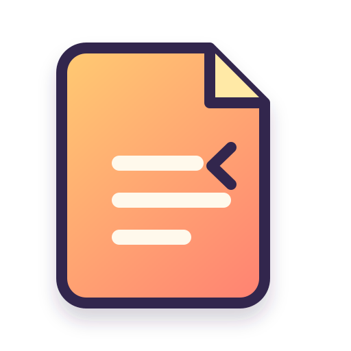
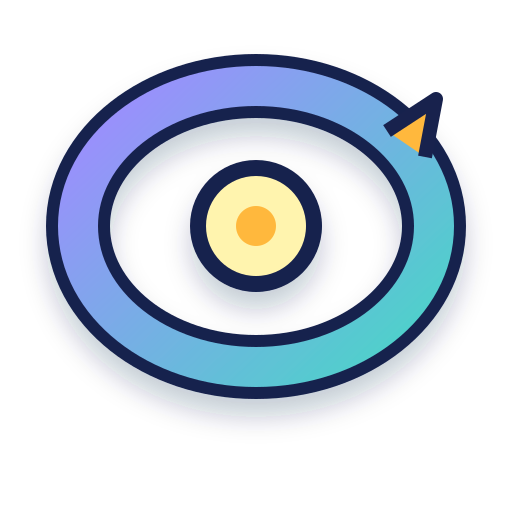
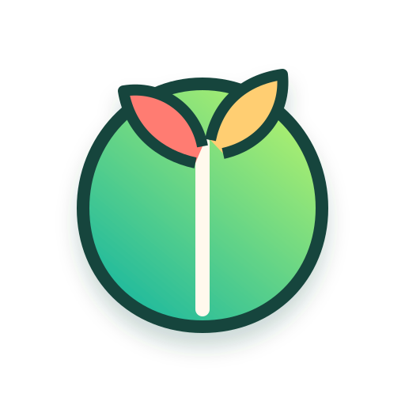
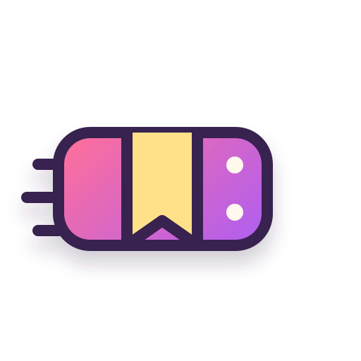

Fold
La idea como página doblada.
Todos son vectoriales, abstractos y suficientemente simples para convertirse en una mascota. No hay un logo elegido todavía.

La idea como página doblada.

La idea como hábito que vuelve.

La idea como crecimiento.
La idea como nueva perspectiva.

La idea que llega cada día.